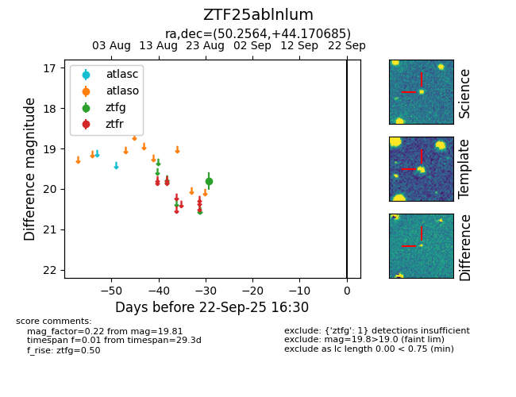

FINK: ZTF25ablnlum
Lasair: ZTF25ablnlum
ALeRCE: ZTF25ablnlum
ZTF25ablnlum (ztf,fink)
equatorial (ra, dec) = (50.2564,+44.17069)
galactic (l, b) = (149.2690,-10.91858)

last ztfg=19.81
1 ztfg detections